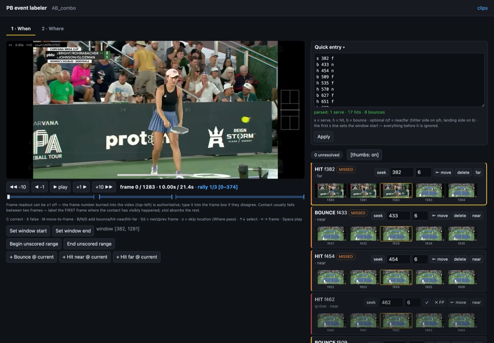
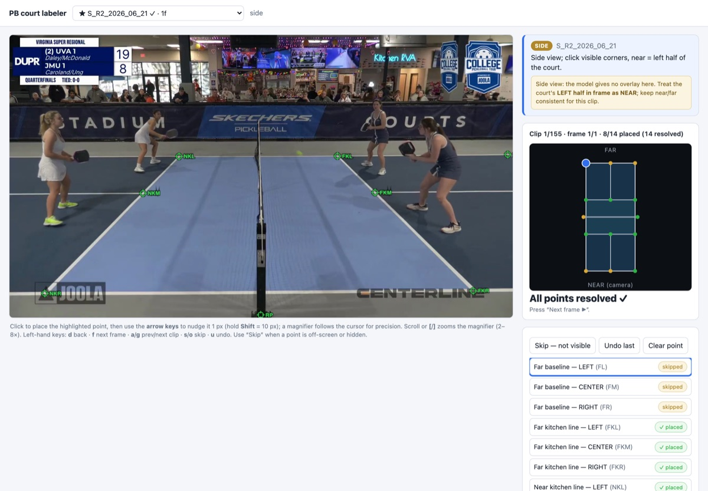

Case Study · Computer Vision · Jan 2026 – Present
What can a match video reveal about a player's decisions?
And how can it help them improve? A computer vision pipeline that turns recorded gameplay into data on shot selection and play.
- Question
- Players record their games but have no simple way to review their shot choices. Can the footage from one camera be turned into data a player can learn from?
- What I did
- Built a computer vision pipeline that finds the ball, the players, and the court in every frame, marks each hit and bounce, places them on a court map in feet, and names serves and returns. Every model is scored against answers I label by hand, and only changes that measurably improve get kept.
- What it shows
- It runs end to end on a single rally from a fixed camera and produces a court map and a shot list. Shot naming beyond serves and returns, and player identity across rallies, are not yet reliable. One camera cannot measure ball height.
- Why it matters
- Coaching feedback today depends on a coach being there. A measured record of a session makes review possible for anyone with a phone on a tripod.
What it does today, and what it is meant to become
A measured rally
Give it one rally clip from a fixed camera. It finds the ball, the players, and the court; marks every hit and bounce; places each one on a court map in feet; and names the serve and the return. Every model is scored against hand-labeled answers.
Where it falls short:
- One camera cannot measure ball height, so lobs and dinks rely on rough guesses.
- Corner and side camera angles are less accurate than a view from behind the baseline.
- Player identity across rallies is not yet reliable.
- Shot names beyond serve and return are not yet checked against hand labels.
- A whole session is not yet split into games automatically.
A coaching tool
Record a session, upload it, and get back what a coach would tell you: which shots you chose at each moment, the patterns that won and lost rallies, and what to practice next. The steps below are the path from here to there.
Three models, one video
The pipeline opens the video once. Three models look at every frame, and each one finds one thing.
How a video gets broken down
Five steps, in order. Each one hands its results to the next.
Split the match into games
A recording of a session can hold several games. The first step finds where each game starts and ends.
Next
Next: build the game splitter. Today clips are cut by hand.
Split each game into rallies
A rally starts with a serve and ends when the ball is dead. The pipeline marks the start and end of every rally.
Working
Next: handle broadcast replays, so a replayed rally is not counted twice.
Find every ball event
A ball event is a moment the ball is hit by a paddle or hits the ground. The pipeline follows the ball's path and flags each one.
Working
Next: catch hits hidden behind a player, which is where most misses happen.
Locate the players, ball, and court at each event
At each event the pipeline records where the ball landed and where every player stood, in feet on the court map.
In progress
Next: measure how far off the player positions are from hand-clicked truth, and tighten the court fit from corner camera angles.
Name each shot and find the shots that mattered
Each shot gets a name (serve, return, drive, drop, dink, lob). Then the pipeline looks for the shots that helped a team win or lose the rally.
Next
Next: label a set of shots by hand so the shot names can be checked, then define what makes a shot influential.
Working means it runs on all my test clips and is checked against hand-labeled answers. In progress means it runs but the numbers are not where I want them. Next means it is planned.
Tools, in plain words
Stack
Green pills are tools built for this project. The rest are third-party tools used alongside them.
Tools I built
Each model is scored against answers I label by hand. These small browser apps show the model's guess first and ask me only to confirm or fix it.


What is next
- Finish the game splitter and the shot namer so a full session runs end to end.
- Put the per-rally stats on a simple dashboard a player can read.
- Keep growing the hand-labeled truth sets, because every model improvement is checked against them.
The code is private while the project is active. Built with AI-assisted development tools; the design, the evaluation method, and the statistical judgment are mine.